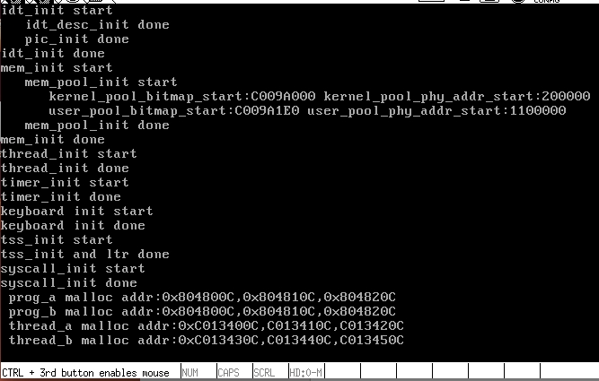

TreeviewCopyright @doctording all right reserved, powered by aleen42
系统调用
系统调用由操作系统核心提供，运行于核心态，而普通的函数调用由函数库或用户自己提供，运行于用户态
系统调用在用户空间进程和硬件设备之间添加了一个中间层
- 它为用户空间提供了一种统一的硬件的抽象接口
- 系统调用保证了系统的稳定和安全。作为硬件设备和应用程序之间的中间人，内核可以基于权限和其他一些规则对需要进行的访问进行裁决。举例来说，这样可以避免应用程序不正确地使用硬件设备，窃取其他进程的资源，或做出其他什么危害系统的事情。
- 在Linux中，系统调用是用户空间访问内核的惟一手段；除异常和中断外，它们是内核惟一的合法入口。
用户空间的程序无法直接执行内核代码。如果果进程可以直接在内核的地址空间上读写的话，系统安全就会失去控制。所以，应用程序应该以某种方式通知系统，告诉内核自己需要执行一个系统调用，希望系统切换到内核态，这样内核就可以代表应用程序来执行该系统调用了。通知内核的机制是靠软件中断实现的。
参考博文：http://blog.csdn.net/zhuxiaoping54532/article/details/51700576
用户进程pid实现
进程结构体重新增pid成员变量
pid采用静态全局变量，锁控制+1,确保唯一
进程初始化是就分配好pid
为进程添加系统调用getpid系统调用接口
代码见16_system\code\pro_getpid
主函数
int main(void) {
put_str("I am kernel\n");
init_all();
process_execute(u_prog_a, "user_prog_a");
process_execute(u_prog_b, "user_prog_b");
intr_enable();
console_put_str(" main_pid:0x");
console_put_int(sys_getpid());
console_put_char('\n');
thread_start("k_thread_a", 31, k_thread_a, "argA ");
thread_start("k_thread_b", 31, k_thread_b, "argB ");
while(1);
return 0;
}
/* 在线程中运行的函数 */
void k_thread_a(void* arg) {
char* para = arg;
console_put_str(" thread_a_pid:0x");
console_put_int(sys_getpid());
console_put_char('\n');
console_put_str(" prog_a_pid:0x");
console_put_int(prog_a_pid);
console_put_char('\n');
while(1);
}
/* 在线程中运行的函数 */
void k_thread_b(void* arg) {
char* para = arg;
console_put_str(" thread_b_pid:0x");
console_put_int(sys_getpid());
console_put_char('\n');
console_put_str(" prog_b_pid:0x");
console_put_int(prog_b_pid);
console_put_char('\n');
while(1);
}
/* 测试用户进程 */
void u_prog_a(void) {
prog_a_pid = getpid();
while(1);
}
/* 测试用户进程 */
void u_prog_b(void) {
prog_b_pid = getpid();
while(1);
}
运行截图

系统调用内存管理
arena数据结构（将一大块内存划分成多个小内存块，每个小内存块之间互不干涉）
- 元信息：
描述自己内存池中的空闲内存块数量，包括内存块描述符指针
大小估计，约为12字节
- 粒度较小的内存小块（mem_block）
用于内存分配
一个arena提供的内存空间大小是有限的，当一个arena用完了，就需要一个新的arena(arena集群)
同一类内存块可以用多个arena提供，每一个类内存块可以建立聂村块描述符（块大小，arena链表)
/* 内存块 */
struct mem_block {
struct list_elem free_elem;
};
/* 内存块描述符 */
struct mem_block_desc {
uint32_t block_size; // 内存块大小
uint32_t blocks_per_arena; // 本arena中可容纳此mem_block的数量.
struct list free_list; // 目前可用的mem_block链表
};
/* 内存仓库arena元信息 */
struct arena {
struct mem_block_desc* desc; // 此arena关联的mem_block_desc
/* large为ture时,cnt表示的是页框数。
* 否则cnt表示空闲mem_block数量 */
uint32_t cnt;
bool large;
};

实现：sys_malloc, sys_free, malloc, free
代码见 16_system\code\pro_malloc_free
void k_thread_a(void*);
void k_thread_b(void*);
void u_prog_a(void);
void u_prog_b(void);
int main(void) {
put_str("I am kernel\n");
init_all();
intr_enable();
process_execute(u_prog_a, "u_prog_a");
process_execute(u_prog_b, "u_prog_b");
thread_start("k_thread_a", 31, k_thread_a, "I am thread_a");
thread_start("k_thread_b", 31, k_thread_b, "I am thread_b");
while(1);
return 0;
}
/* 在线程中运行的函数 */
void k_thread_a(void* arg) {
void* addr1 = sys_malloc(256);
void* addr2 = sys_malloc(255);
void* addr3 = sys_malloc(254);
console_put_str(" thread_a malloc addr:0x");
console_put_int((int)addr1);
console_put_char(',');
console_put_int((int)addr2);
console_put_char(',');
console_put_int((int)addr3);
console_put_char('\n');
int cpu_delay = 100000;
while(cpu_delay-- > 0);
sys_free(addr1);
sys_free(addr2);
sys_free(addr3);
while(1);
}
/* 在线程中运行的函数 */
void k_thread_b(void* arg) {
void* addr1 = sys_malloc(256);
void* addr2 = sys_malloc(255);
void* addr3 = sys_malloc(254);
console_put_str(" thread_b malloc addr:0x");
console_put_int((int)addr1);
console_put_char(',');
console_put_int((int)addr2);
console_put_char(',');
console_put_int((int)addr3);
console_put_char('\n');
int cpu_delay = 100000;
while(cpu_delay-- > 0);
sys_free(addr1);
sys_free(addr2);
sys_free(addr3);
while(1);
}
/* 测试用户进程 */
void u_prog_a(void) {
void* addr1 = malloc(256);
void* addr2 = malloc(255);
void* addr3 = malloc(254);
printf(" prog_a malloc addr:0x%x,0x%x,0x%x\n", (int)addr1, (int)addr2, (int)addr3);
int cpu_delay = 100000;
while(cpu_delay-- > 0);
free(addr1);
free(addr2);
free(addr3);
while(1);
}
/* 测试用户进程 */
void u_prog_b(void) {
void* addr1 = malloc(256);
void* addr2 = malloc(255);
void* addr3 = malloc(254);
printf(" prog_b malloc addr:0x%x,0x%x,0x%x\n", (int)addr1, (int)addr2, (int)addr3);
int cpu_delay = 100000;
while(cpu_delay-- > 0);
free(addr1);
free(addr2);
free(addr3);
while(1);
}
